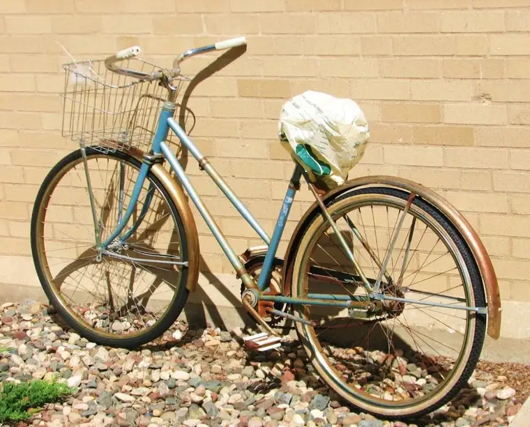

{kind=link}
Hi Sweetie!
Thanks so much for the email today. It was nice to have a little break from my work. I want to answer your questions, so here goes.
You asked what I liked the most about being here last year, and what, so far, is the thing I like most about this year. You asked what we eat, and if it’s good, and whether my room is the same as last year, or nice, or not as nice. You also wanted to know about prayer time — how long it is and what we do exactly. And you wanted to know about my work — what it feels like to have to actually cut words from my manuscript, and whether it’s hard.
Such great questions! Thanks for asking. I hope someday I can share this place with you. You were so sweet in your letter to say that you are glad I’m having this time away. That warmed my heart that you would be able to consider how valuable this is to me, even though it means our family is separated for a while.
It’s an interesting place in many ways. One of the things I noticed first last year is that most everyone walks around here, and a lot of the Sisters don’t even know how to drive — they’ve simply never needed to. Most ride bicycles like the one at the top of the page.
Some of the Sisters have been here since they were 18, and they plan to die here, too. But tonight, while talking to one of them, I found out that they no longer accept women so young. They want women who come here to have lived a little first so they’ll know they’re making the right choice.
Tonight at dinner, I learned that having five children is nothing. One of the Sisters with whom I talked came from a family of 17 children; another, 15. The other two each had five kids in their families growing up. Another had 10 in her family, and all but two either became religious sisters or priests. Several of her sisters are Sisters who are here as well. Imagine living near your sister for the rest of your life! (Ha!)
One of the things I like best is that I don’t have to worry about buying groceries and cooking for seven people three or so times a day. It is so nice to wake up and take my time, then stroll to noon prayer before lunch, and again, to evening prayer before or after dinner. I can’t quite make it up for morning prayer, but the Sisters here are all very understanding of my Night Owl tendencies. They know I am primarily here to work, but I have to admit that breaking up the day with the rhythm of prayer and food seems a very healthy schedule. I might be tempted, otherwise, to work and never leave my apartment. This gives me an excuse to reach out beyond myself and the project at hand.
Specifically, we had eggs and bacon for breakfast, and for dinner, turkey and potatoes, with all kinds of side offerings for every meal. As for the prayer times, other than Sunday Mass, the three daily prayers take place in a side chapel and are primarily sung. It’s like the psalms we sing at Mass, only all of it is sung, with the help of several cantors. Prayers are read as well, but the rest is all singing. It’s really a nice way to pray and reflect.
Well, I think that’s about enough for now. Oh, I am in the same apartment as last year and it’s perfect for me. I couldn’t be more pleased. I had fun last night setting up things similarly to how I had everything last year. I feel so at peace here, and even though I do miss all of you, I’m enjoying my time away, and know I’ll have more to give to you, now, upon my return. And of course, there is going to be lots to do then, so I hope you’re enjoying your time off as well.
Much love to you,
Always,
Mom
P.S. I promise to answer your question about the editing process in another message later.